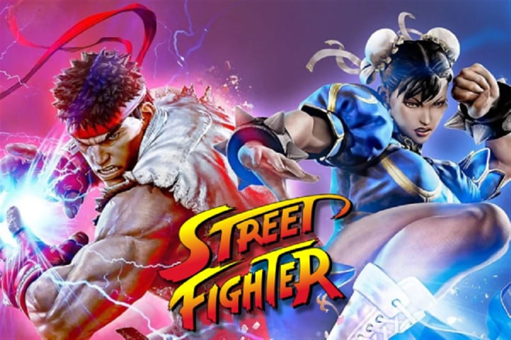

Les Jeux d'action
Le jeu d'action est un genre de jeu vidéo dont le gameplay est fondé sur des interactions en temps réel et qui fait
essentiellement appel à l'habileté et aux réflexes du joueur.
Le terme tend en particulier à désigner les jeux
mettant en œuvre des confrontations violentes, comme les shoot them up, les jeux de combat ou les jeux de tir à la première
personne (FPS), mais son champ s'étend en fait à des types de jeux très variés, comme les casse-briques, les jeux de
labyrinthe, les jeux de plates-formes, les jeux de course, les jeux de sport, etc., et dont beaucoup ne sont pas
sous-catégorisés. Le jeu d'action est de loin le genre de jeu vidéo le plus représenté.
Histoire
Les premiers jeux d'action commerciaux sont Computer Space (1971) et le célèbre Pong (1972). Les salles d'arcade sont le terrain privilégié du jeu d'action, et c'est sur bornes d'arcade que sont nés et se sont développés la plupart de ces sous-genres dans les années 1970 et 1980. Le terme « jeu d'arcade » a ainsi longtemps été utilisé comme synonyme de « jeu d'action ». Les jeux d'action sont basés sur le mouvement et sur le temps réel, ils requièrent généralement davantage de ressources systèmes pour fonctionner qu'un jeu d'aventure, de stratégie ou de réflexion.
Sous-genre
-
Combat
Le personnage contrôlé par le joueur est opposé à un seul combattant à la fois dans un espace fermé (ring, arène). Il est généralement possible de jouer à deux joueurs, l'un contre l'autre. Le genre a été popularisé par la série Street Fighter au début des années 1990. Plus tard, le genre s'est vu adapté à la représentation en 3D avec la série Virtua Fighter. Les jeux 2D et 3D ont cependant continué à se développer en parallèle. Généralement, le genre se réfère aux sports de combats et plus précisément aux arts martiaux. Certains jeux de combat s'inspirent de sports de combat réel dans les détails, comme la boxe, le catch ou la boxe pieds-poings.
Exemple:- Street fighter
- Brawlallha
- Smash bros
-
Tir objectif
Le jeu de tir à la première personne, ou FPS , est un type de jeu d'action dont le gameplay met l'accent sur des fusillades en vue subjective dans des environnements en 3D temps réel (ou en pseudo 3D pour les premiers jeux du genre). Popularisé au début des années 1990, le genre a rencontré un succès fulgurant grâce à sa propension à plonger le joueur au cœur de l'action.
Exemple:- Wolfenstein 3D
- Doom
- Half-Life
- Halo
-
Shoot them up
Le shoot them up est un type de jeu centré sur la capacité à viser les ennemis. Il existe différentes formes de shoot them up mais le terme désigne en particulier un type de jeu dans lequel le joueur est aux commandes d'un vaisseau spatial et doit éradiquer des vagues ininterrompues d'ennemis dans des niveaux qui se déploient généralement par scrolling forcé. Très populaire dans l'ère du jeu vidéo 2D, le genre se catégorise par le degré de liberté offert, le type de vue et le type de scrolling employés. Parmi les différentes formes de shoot them up, on compte le shoot fixe, le shoot à scrolling, le shoot multidirectionnel, le tube shooter , le rail shooter, le run and gun, le shoot and jump, le shooting gallery et le jeu de tir au pistolet.
Exemple:- Asteroids
- Space Invaders
- Radiant Silvergun
-
Action-infiltration

Le jeu d'action-infiltration est un type de jeu d'action dont le gameplay met l'accent sur des manœuvres de furtivité plutôt que sur des confrontations directes. Le joueur incarne généralement un espion qui doit se débarrasser des ennemis de manière silencieuse ou simplement les éviter. Ce type de jeu impose une progression plus méthodique et le recours aux armes à feu n'est pas systématique (techniques de corps à corps, utilisation de gadgets).
Exemple:- Metal Gear Solid
- Dark Project
- Tenchu